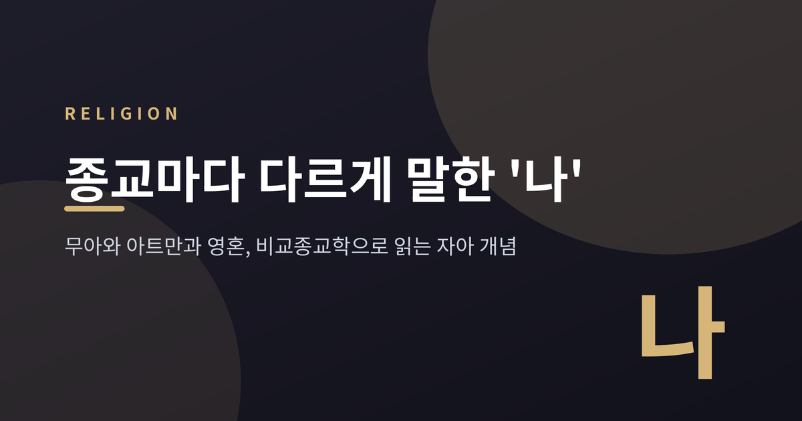
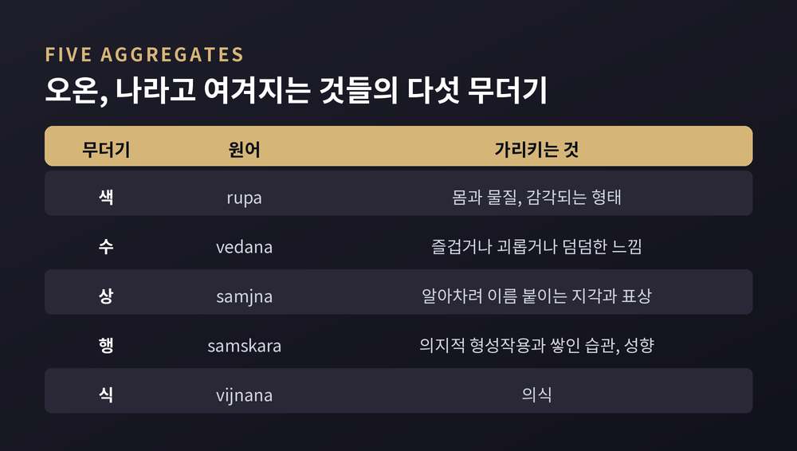
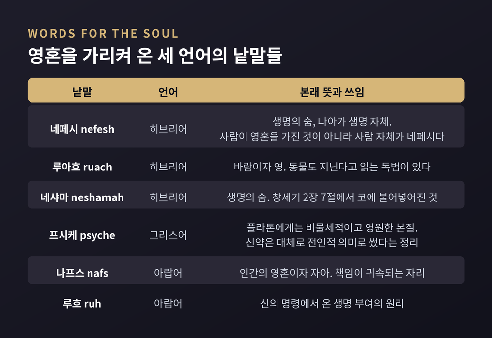
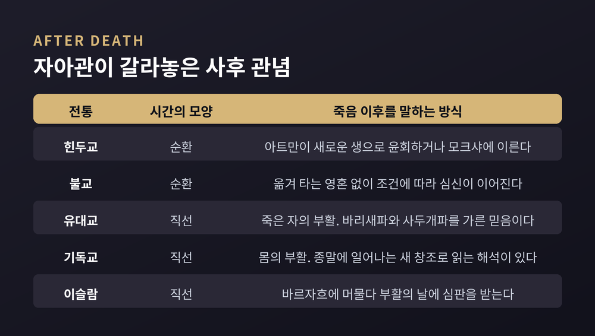
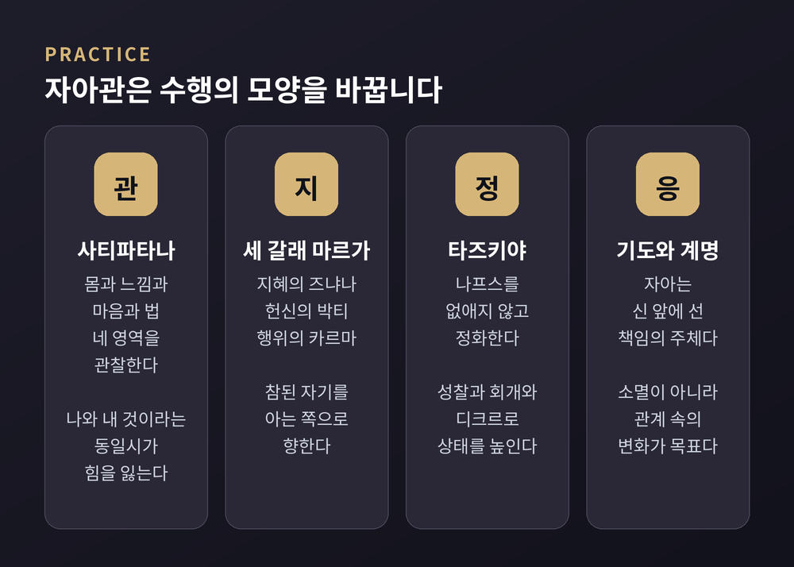

불교의 오온과 베단타 세 학파, 네페시와 프시케와 나프스까지 비교종교학으로 읽는 자아 개념
이번 글에서는 종교마다 '나'를 어떻게 규정해 왔는지를 정리해 보겠습니다. 불교의 무아와 힌두교의 아트만, 그리고 유대교·기독교·이슬람의 영혼 개념을 나란히 놓고 봅니다. 신학적 옳고 그름을 가리려는 글이 아니라, 비교종교학이 관찰해 온 차이를 따라가 보는 글입니다.

세 줄 요약
죽은 뒤에 어떻게 되는가. 종교를 비교할 때 흔히 먼저 묻는 질문입니다.
그런데 이 질문에는 앞선 질문이 하나 숨어 있습니다. 죽는 그 '나'가 대체 무엇이냐는 물음입니다. 자아를 무엇으로 규정하느냐가 정해지지 않으면 사후 관념도 정해지지 않습니다.
비교종교학이 세 갈래를 나란히 놓는 이유가 여기에 있습니다. 인도계 전통 안에서도 불교와 힌두교는 정반대에 가까운 답을 내놓았습니다. 그리고 아브라함계 세 전통은 또 다른 어휘로 이 물음을 받았습니다.
불교의 무아는 팔리어로 아낫따(anatta), 산스크리트로 아나뜨만(anatman)이라 부릅니다. 브리태니커는 이를 "인간 안에 영혼이라 부를 만한 영속적이고 근저에 놓인 실체가 없다"는 교리로 정의합니다.
없다면 무엇이 있는가. 끊임없이 변하는 다섯 요소가 있습니다. 팔리어로 칸다(khandha), 산스크리트로 스칸다(skandha), 한자로는 오온(五蘊)입니다.
색(rupa)은 몸과 물질입니다. 수(vedana)는 즐겁고 괴롭고 덤덤한 느낌입니다. 상(samjna)은 알아차려 이름 붙이는 지각입니다. 행(samskara)은 의지적 형성작용과 습관입니다. 식(vijnana)은 의식입니다.

여기서 오해하기 쉬운 지점이 하나 있습니다. 오온은 '자아의 부품 목록'이 아닙니다. 자아라고 오인되는 것들의 분류에 가깝습니다. 스탠퍼드 철학백과는 보통 '자아'라고 여겨지는 것이 실은 끊임없이 변하는 물질적·정신적 구성요소의 집합이라고 정리합니다.
무아·무상(anicca)·고(dukkha)를 묶어 삼법인이라 부르고, 이 셋을 인식하는 것이 바른 이해라고 봅니다.
『밀린다팡하』의 수레 비유가 이 논리를 가장 간명하게 보여 줍니다. 박트리아의 왕 메난드로스와 승려 나가세나의 문답을 담은 이 문헌은, 초기 부분이 기원후 1세기경으로 추정됩니다. 나가세나는 수레를 예로 듭니다. 바퀴도 멍에도 차축도 수레가 아니고, 그것들을 다 합쳐도 '수레'라는 별도의 실체가 나오지는 않습니다. 왕은 결국 '수레'가 부품에 기대어 붙은 이름임을 인정합니다.
다만 나가세나는 여기서 한 걸음 더 나갑니다. '나가세나'는 몸이나 의식의 어느 부분과도 동일시될 수 없지만, 그 부분들과 떨어져서 존재한다고도 볼 수 없다고 논증합니다. 무아는 "아무것도 없다"는 허무주의가 아니라는 뜻입니다.
그래서 이 전통은 곧바로 어려운 숙제를 떠안습니다. 자아가 없는데 어떻게 다시 태어나는가. 지속하는 주체가 없는데 도덕적 책임은 어디에 귀속되는가. 『밀린다팡하』가 다루는 쟁점 목록이 그대로 이 난점의 목록입니다.
힌두교의 아트만(atman)은 방향이 정반대입니다. 브리태니커는 아트만을 "보편적 자아이며, 죽은 뒤 새로운 생으로 윤회하거나 존재의 속박에서 해방되는 인격의 영원한 핵심과 동일한 것"으로 정의합니다.
흥미로운 것은 이 말의 이력입니다. 초기 베다에서는 대체로 '자기 자신'을 뜻하는 재귀대명사에 가까웠습니다. 후대 우파니샤드에 와서야 철학적 주제로 전면에 나섭니다.
아트만은 다른 기관과 능력들을 작동하게 하는 것이고, 동시에 그것들이 그것을 위해 작동하는 것입니다. 브라흐만이 우주의 작동을 떠받치듯, 아트만은 한 사람의 모든 활동을 떠받칩니다.
이 둘의 관계를 압축한 문장이 "타트 트밤 아시(tat tvam asi)"입니다. 직역하면 "그것이 너다"입니다. 『찬도갸 우파니샤드』 제6장에서 스승 웃달라카 아루니가 아들을 가르치며 반복하는 구절로, 성립 시기는 기원전 600년경으로 표기됩니다.
다만 여기서 힌두교를 하나로 묶으면 곤란합니다. 아트만과 브라흐만 사이의 거리를 학파마다 다르게 놓았기 때문입니다.
아드바이타는 둘을 완전히 같다고 봅니다. 하나의 의식이 마야에 가려 여럿으로 보일 뿐이라는 것입니다. 라마누자의 비시슈타드바이타는 브라흐만과 의식 있는 존재와 우주를 구별되지만 분리 불가능하게 묶인 실재로 봅니다. 마드바의 드바이타는 아트만과 브라흐만이 영원히 다르다고 봅니다. 영혼은 신에게 의존할 뿐 결코 신과 하나가 되지 않습니다.
같은 전통 안에서도 "나는 곧 절대자다"와 "나는 결코 절대자가 아니다"가 함께 서 있는 셈입니다.
유대교·기독교·이슬람을 묶어 '영혼'이라는 한 단어로 옮기면 놓치는 것이 많습니다. 원어들의 의미장이 서로 다릅니다.

히브리어 네페시(nefesh)의 핵심 의미는 '생명의 숨'이고, 거기서 '생명'으로 확장됩니다. 성서 히브리어의 관점에서 사람은 영혼을 '가지고' 있는 존재가 아니라, 사람 자체가 하나의 네페시입니다. 창세기 2장 7절의 구조가 이를 잘 보여 줍니다. 흙으로 지은 사람의 코에 생명의 숨(네샤마)을 불어넣으니 사람이 살아 있는 존재(네페시)가 되었다는 서술입니다.
루아흐(ruach)는 바람이자 영을 뜻하고, 네샤마(neshamah)는 생명의 숨을 가리킵니다. 다만 이 셋을 '영혼의 세 층위'로 체계화한 것은 대체로 후대 랍비·카발라 전통의 독법이라는 점은 함께 기억할 필요가 있습니다.
그리스어 프시케(psyche)는 결이 다릅니다. 플라톤은 프시케를 사람의 본질로 보았고, 그 본질을 비물체적이고 영원한 것으로 여겼습니다. 『파이돈』에서 소크라테스가 영혼 불멸의 논증들을 검토하는 장면이 대표적입니다.
여기서 오래된 논쟁이 하나 시작됩니다. 신약의 프시케는 플라톤적인가, 히브리적인가. 다수 연구는 신약 대부분이 칠십인역의 용어법을 따라 전인적 의미장에서 이 말을 썼다고 봅니다. 몸과 대비되는 그리스적 독법이 두드러지는 것은 2세기 말경부터라는 정리입니다.
아랍어에서는 나프스(nafs)와 루흐(ruh)가 구분됩니다. 나프스는 인간의 영혼이자 자아이고, 루흐는 신의 명령에서 온 생명 부여의 원리로 이해됩니다. 꾸란 17장 85절은 루흐에 대한 질문에 "루흐는 내 주님의 명에 속한 것이며 너희는 지식을 조금밖에 받지 못하였다"고 답합니다. 이 구절의 해석을 두고는 무슬림 학자들 사이에서도 견해가 갈려 왔습니다.
자아를 어떻게 규정했는지가 여기서 결과로 드러납니다.

인도계 전통의 시간은 순환합니다. 힌두교에서 아트만은 죽은 뒤 새로운 생으로 윤회하거나 모크샤에 이릅니다. 모크샤는 '풀어주다'를 뜻하는 산스크리트 어근 무츠(muc)에서 왔습니다. 목표는 순환 안에서 더 나은 자리를 얻는 것이 아니라 순환 자체에서 벗어나는 것입니다. 불교는 여기에 무아를 얹으므로, 옮겨 타는 영혼 대신 조건에 따라 이어지는 심신의 연속을 말합니다.
아브라함계 전통의 시간은 한 방향으로 흐릅니다. 유대교에서 죽은 자의 부활은 전통 신앙의 근간이며, 이 믿음이 바리새파를 사두개파와 갈랐습니다. 미쉬나 산헤드린 10장 1절은 "모든 이스라엘은 오는 세상에 몫이 있다"로 시작하고, 마이모니데스는 부활을 열세 가지 근본 진리 가운데 하나로 꼽았습니다. 브라코트 17a는 오는 세상을 먹고 마심도 경쟁도 없는 자리로 묘사합니다.
기독교 쪽에서는 오스카 쿨만의 1955년 강연이 고전적 논쟁점입니다. 쿨만은 신약이 그리스 인간학 용어를 쓰면서도 인간 이해에서는 깊이 히브리적이라고 보았습니다. 몸의 부활은 모든 것을 포괄하는 새로운 창조 행위이므로 각자의 죽음과 함께 시작되지 않고 종말에 비로소 일어난다는 것입니다.
이슬람에서는 죽음 이후 영혼이 바르자흐라는 대기 상태에 머뭅니다. 바르자흐는 본래 '장벽' 또는 '분리'를 뜻하는 꾸란의 용어입니다. 부활의 날에 심판이 이루어지고 그 결과에 따라 처소가 갈립니다.
한 축은 "다시 돌아오는 길"을 말하고, 다른 축은 "다 함께 일어나는 날"을 말합니다. 자아를 실체로 볼지 과정으로 볼지, 시간을 원으로 볼지 선으로 볼지가 여기서 맞물립니다.
이 차이는 관념에 머물지 않습니다. 무엇을 수행이라 부를지가 달라집니다.
상좌부 불교의 사티파타나, 곧 마음챙김의 확립은 몸과 느낌과 마음과 법 네 영역을 관찰합니다. 모든 상태가 조건 따라 일어나고 사라짐을 반복해 보게 되면, '나'와 '내 것'이라는 동일시가 힘을 잃는다고 봅니다. 목표가 자아의 완성이 아니라 동일시의 해체 쪽에 놓입니다.
힌두교는 반대 방향입니다. 아트만이 실재한다고 보므로 목표는 참된 자기를 아는 일이 됩니다. 『바가바드기타』는 세 갈래 길을 제시합니다. 지혜의 즈냐나 마르가, 헌신의 박티 마르가, 행위의 카르마 마르가입니다. 카르마 마르가에서 크리슈나는 행위 자체가 사람을 묶는 것이 아니라 이기적 의도가 묶는다고 말합니다. 브리태니커는 이 셋이 서로 다른 유형의 사람에게 맞되 상호작용하며 모두에게 열려 있다고 정리합니다.
이슬람 전통에는 타즈키야트 알나프스, 자아의 정화가 있습니다. 나프스는 없애야 할 환상이 아니라 상태를 끌어올려야 할 대상으로 다루어집니다. 꾸란은 악을 명하는 나프스 알암마라, 스스로를 꾸짖는 나프스 알라와마, 평온에 이른 나프스 알무트마인나를 말합니다. 알가잘리는 『이흐야 울룸 알딘』에서 자기 성찰과 회개와 디크르를 통해 이 상태를 높여 가는 틀을 종합했습니다.
유대교와 기독교에서는 자아가 신 앞에 선 책임의 주체로 유지됩니다. 소멸이 아니라 관계 속의 변화가 목표가 됩니다.

여기까지 읽고 나면 깔끔한 도식이 하나 생깁니다. 그런데 그 도식이 가장 위험합니다.
"불교는 자아를 부정하고 힌두교는 긍정한다"는 요약부터 그렇습니다. 상좌부는 붓다성 교리를 발전시키지 않았고 관습적 자아만 인정합니다. 반면 대승의 여래장 계열은 무상한 오온만이 '자아가 아닌' 것이고 참으로 실재하는 본질은 침범할 수 없는 붓다의 원리라고 주장합니다. 『열반경』은 이 긴장을 감추지 않습니다. 20세기 태국에서는 열반이 궁극의 자아인지를 두고 교단과 일부 지도적 승려들 사이에 논쟁이 있었습니다.
"아브라함계 종교는 윤회를 모른다"는 요약도 성립하지 않습니다. 카발라의 길굴(gilgul)은 영혼의 전이를 말합니다. 히브리어 길굴은 '순환'이나 '바퀴'를 뜻하고, 어근은 '돌다'입니다. 명시적 설명은 중세 카발라의 『조하르』 등에서 나타나고, 16세기 이삭 루리아가 창조의 형이상학적 목적의 일부로 체계화했습니다. 성문 토라에도 탈무드에도 명시되지 않지만, 오늘날 하시딕 유대교에서는 보편적으로 받아들여집니다.
기독교 내부도 한 목소리가 아닙니다. 가톨릭 교회 교리서 365항은 영혼과 몸의 일치가 너무나 깊어서 영혼을 몸의 '형상'으로 보아야 한다고 말합니다. 아리스토텔레스를 따르는 아퀴나스의 설명 위에 서 있는 진술입니다. 한편 낸시 머피의 비환원적 물리주의는 인간을 복잡한 기능이 도덕성과 영성을 낳는 물리적 유기체로 봅니다. 여기에 대한 반론도 활발합니다.
힌두교 쪽 드바이타는 영혼과 신의 영원한 구별을 주장하니, 이 대목에서는 아브라함계 유신론과 오히려 구조가 가깝습니다.
전통 사이의 차이보다 전통 내부의 이견이 더 클 때가 적지 않습니다. 이 사실을 빼놓으면 비교가 아니라 도식화가 됩니다.
정리하면 이렇습니다.
무아와 아트만과 영혼은 서로 다른 답이기 전에 서로 다른 질문의 흔적입니다. 어떤 전통은 '나'라는 매듭을 푸는 데서 자유를 찾았고, 어떤 전통은 그 매듭을 신 앞에 세우는 데서 의미를 찾았습니다. 예전에는 이 차이를 우열로 읽는 서술이 흔했습니다. 지금의 종교학은 각 전통이 무엇을 묻고 무엇을 해결하려 했는지를 먼저 봅니다.
"'나'를 무엇이라 정하느냐가 죽음과 수행의 모양을 함께 정한다" — 비교의 축은 결국 여기에 놓입니다.
어느 쪽이 옳으냐고 물으신다면, 그것은 이 글이 답할 수 있는 질문이 아니라고 말씀드리겠습니다. 다만 나란히 놓고 보는 일만으로도, 내가 당연하게 여겨 온 '나'가 그리 당연하지 않았음은 남습니다.